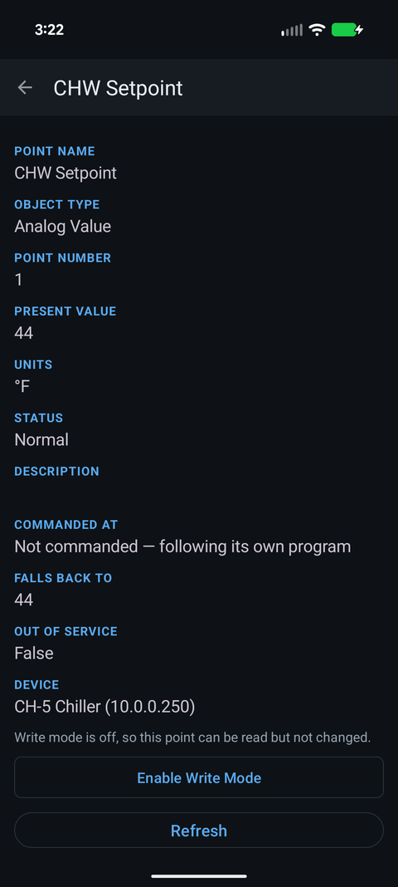
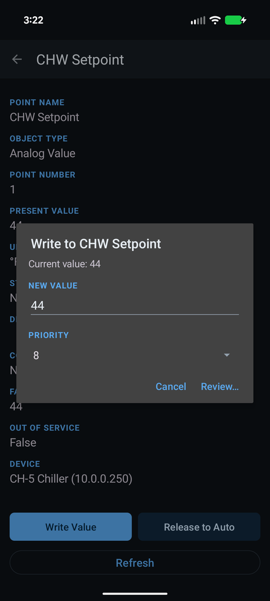
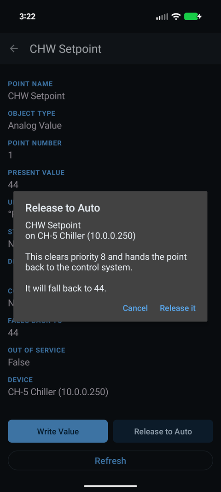

How do I write to a BACnet point with Easy BACnet, and release it afterwards?
Updated 11 October 2026
In Easy BACnet Mode, open the menu (three dots), tap Write mode and accept the warning. Open the point, tap Write Value, enter the new value, leave the priority at 8 unless the site uses something else, tap Review…, check the summary, then Write it. When you are done, tap Release to Auto on the same point. A BACnet command does not expire; if you don't release it, the point stays where you left it after you leave site.



Write mode is off every time the app starts
Easy BACnet opens with writing disabled, every time. It is not a setting it remembers. Someone who opened the app to check a temperature shouldn't be two taps from commanding a damper. Turn it on when you need it; it is off again the next time the app starts.
Step 1 — Turn on write mode
On the Easy BACnet Mode screen, open the menu (three dots, top right) and tap Write mode. The warning says, in short: a value you write is held at the priority you choose until it is released, it does not time out, and closing the app does not undo it. Tap I understand — turn it on.
Already on a point? With write mode off, a writable point shows Write mode is off, so this point can be read but not changed and an Enable Write Mode button that opens the same warning.
Step 2 — Look before you write
Open the point. Two rows matter here:
- Commanded At — the highest priority currently holding the point. Not commanded — following its own program means every slot in the priority array is empty and the point is sitting at its relinquish default. Priority 8 (68) means a value of 68 is in slot 8 and is in control.
- Falls Back To — the relinquish default: what the point goes to once every slot is released.
If the point is already held at a higher priority than yours (a lower number, say 5 or 6), the controller will accept your write and store it in your slot, but Present_Value won't change until that higher priority releases. That is normal BACnet behaviour — see BACnet priority and stuck overrides.
Step 3 — Write
Tap Write Value. Enter the new value; for a binary point you pick Active (On) or Inactive (Off) from a list instead of typing. Choose a Priority. The default, 8, is Manual Operator in the BACnet standard and is what most front ends use for operator overrides. Leave it there unless the site's standard says otherwise, and stay away from 1 and 2, which are reserved for life safety.
Priority slots don't belong to anyone. If Commanded At already shows priority 8, that may be an override someone left from the head-end; writing at 8 replaces their value, and releasing 8 clears it. Note what was there before you touch it.
Tap Review…. The Confirm write summary shows the point, the device, the old value, the new value and the priority. Tap Write it. The app sends the write, waits for the acknowledgement, then re-reads the point so you see what the device actually did. If the controller refuses, you get its error in plain words.
Step 4 — Release it before you leave
Tap Release to Auto on the point. The confirmation shows which priority it will clear and what the point should fall back to; tap Release it and the app writes NULL to that slot. The release uses the priority selected on that point screen, which goes back to 8 when you reopen the point, so if you wrote at another level, check the number in the confirmation before you tap. A Release control on a custom remote does the same at that control's priority. The point then follows the next priority down, or its Falls Back To value if the array is empty, and Commanded At should read Not commanded again.
A supply fan commanded on at priority 8 and never released keeps running until someone finds the override, which can be months. Releasing is part of the job, not an extra.
Checking what you did
Menu → Session write log lists every write and release this session, with the time, the point, old and new values, the priority, and whether the controller accepted it. Go through it before you leave. Anything you wrote that has no matching release is still commanded.
Points that will not accept a write
- Input points (Analog Input, Binary Input, Multi-State Input) normally reject a Present_Value write, often with Write Access Denied, unless the point is Out Of Service, because their value comes from the physical sensor. The app warns you about this in the write dialog.
- Points with no priority array (many plain Analog and Binary Values) take a write straight into Present_Value. There is nothing to release, so the app only shows Release to Auto on points it has confirmed are commandable. Put the old value back by hand if you change one.